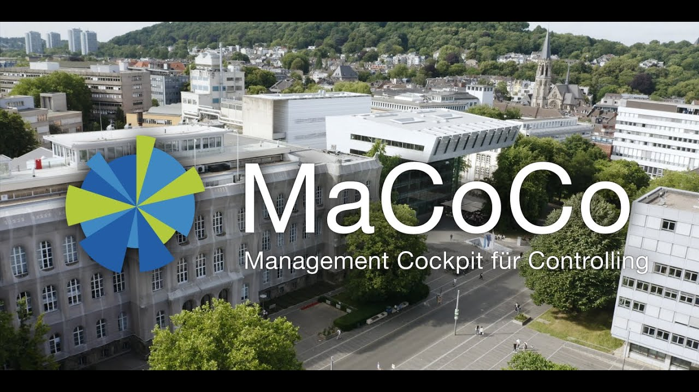
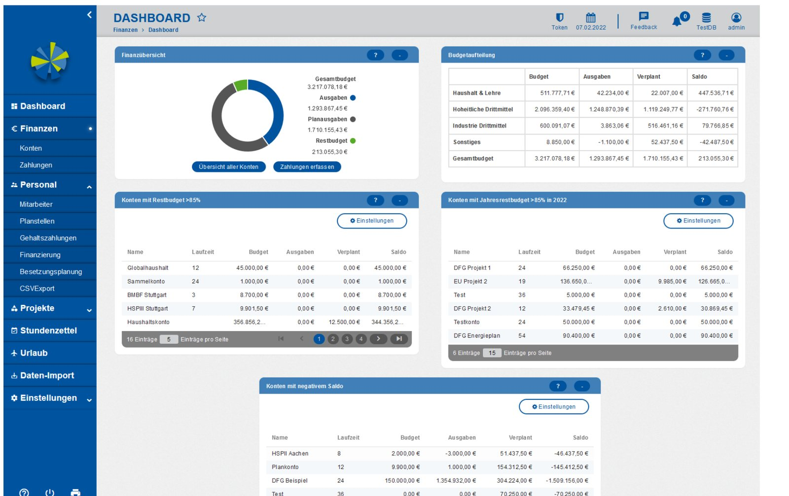

01MaCoCo
2018 — 2026Every university chair manages real money — grants, contracts, staff paid from several projects — but the university’s ERP system is built for the central administration. MaCoCo gives the chairs their own cockpit, and most of its code was never written by hand.
- Role
- Project lead
- Partner
- Chair of Management Accounting
- Status
- In production at RWTH
- Generated
- ~ 3/4 of the code

▶play video-
The problem
When RWTH moved its administration to SAP, the system served the central offices well — but not the roughly 400 chairs and institutes that each run their own budgets. They need to know how much money is left on which grant, which contract is financed from which project, and whether the project’s time sheets are complete. Most kept this in spreadsheets or home-grown tools: error-prone, single-user and invisible to everyone else.
-
The cockpit
- Finances — budgets, income and expenses across all accounts and projects, with planned spending and forecasts.
- Staff — master data, contracts and their financing; staff costs flow automatically into the projects that pay them.
- Projects — time sheets for funders that require them (with a companion Android app), staffing plans and org charts.

The dashboard of a chair (demo data): budget, spending, planned spending and the accounts that need attention. -
Built from models
MaCoCo started in 2016 as a hand-written prototype. Step by step, generated code replaced it — first the data classes and persistence, then the commands, the validation from OCL constraints and finally the whole front end from GUI models. The generator that grew out of this work became MontiGem. Today the domain is described in class diagrams and GUI models; hand-written business logic is plugged in where it is needed, without ever being overwritten by the generator.
~1.1 Mlines of code74 %of it generated~150domain classes60GUI models -
Agile, with its users
MaCoCo is developed in a Scrum-like cycle together with lead users from all faculties. A steering committee — data protection, staff councils, finance and HR administration, IT Center and deans — meets twice a year; users meet monthly. Critical fixes ship on demand, everything else every two to three months. Because the system is regenerated from models, even large changes to the domain stay affordable.
-
In production
MaCoCo is hosted by the RWTH IT Center and connected to SAP; every chair gets its own database. It is used across the university every working day.
200+chairs & institutes~200logins per working day2016in development since
- GLM+24
- Net24
- DGM+21
-
GMN+20
Continuous Transition from Model-Driven Prototype to Full-Size Real-World Enterprise Information SystemsA. Gerasimov, J. Michael, L. Netz, B. Rumpe, S. VargaAMCIS 2020, pp. 1–10
- AMN+20a
-
GHK+20
Generated Enterprise Information Systems: MDSE for Maintainable Co-Development of Frontend and BackendA. Gerasimov, P. Heuser, H. Ketteniß, P. Letmathe, J. Michael, L. Netz, B. Rumpe, S. VargaModellierung 2020 Companion, pp. 22–30
- ANV+18